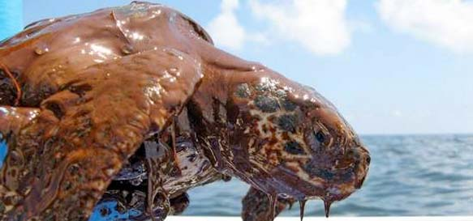
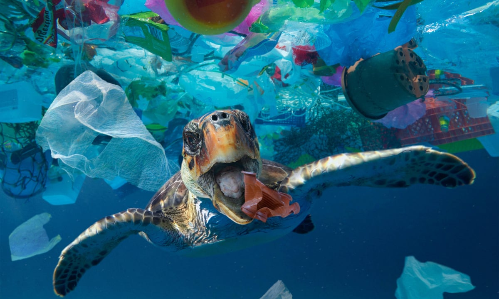

"Turtles are facing many threats that are pushing them towards extinction. Human activities have tipped the scales against the survival of these ancient mariners. Slaughtered for their eggs, meat, skin, and shells, sea turtles suffer from poaching and over-exploitation. More than half of the world’s turtle and tortoise species are now threatened with extinction. Artificial light poses an additional threat on built-up beaches. When turtles hatch at night, they run toward the brightest area, which is usually the sea, and find their way into the water. Artificial light sources e.g. from houses, hotels or restaurants, disorient the animals, they do not find their way into the sea and dry up in the hot sun. Turtles and tortoises are among the most remarkable organisms on Earth. The chelonian shell is a 220-million-year-old adaptation that predates the origins of mammals and birds."
 Marine pollution is both directly harmful to sea turtles as well as indirectly, through the deterioration of their natural habitats. Some of the most dangerous ocean pollutants include toxic metals, PCBs, fertilizers, untreated waste, chemicals, and a variety of petroleum products. Oil spills are particularly dangerous to sea turtles. Although oil does not tend to stick to them as it does to other marine life, sea turtles are still at risk when they surface for air, where oil can get in their eyes, skin, and lungs, which can lead to significant health problems. Even if they are not directly in contact with marine pollution, sea turtles can still ingest harmful chemicals through the food they eat. Oil is also a cause for the death of seagrass, which is a staple in the diet of the green turtle. The diets of the hawksbill sea turtle, loggerhead sea turtle, and Kemp's ridley sea turtle species have also been affected by the oil's role in the reduction of certain sponges and invertebrates. Extended exposure has been found to deteriorate the health of a sea turtle in general, making it more weak and vulnerable to a variety of other threats.
Eight million tons of plastic make their way to the ocean every year. For many marine species, including sea turtles, plastics in our oceans can lead to threats of entanglement, habitat degradation, and ingestion. Discarded plastic bags floating in the ocean resemble jellyfish, a common food of sea turtles.  If a turtle eats a plastic bag, it tends to clog the turtle's digestive system and result in the animal dying. There have been many cases of dissection showing plastic and other debris inside turtles' stomachs and intestines. Marine debris has caused mortality in all species of sea turtles. There have also been cases where sea turtles have been found with plastic straws in their noses, plastic bags or toothbrushes in their stomachs, or fish hooks stuck on their flippers. Plastic straws can be dangerous to sea turtles, too, because they are often mistaken for food. This can cause the sea turtle to choke or die of starvation because they feel full and do not eat, when they are actually full of plastic. Despite being small, plastic straws are among the top items that pollute the ocean. As previously mentioned, ingestion is also more likely to occur if the plastic resembles their typical food. Studies have found that turtles had a 50% chance of dying if they ingested more than fourteen pieces of plastic.
According to a study published in Conservation Letters, over 8 million sea turtles died between 1990 and 2010 due to injuries
 caused by being accidentally caught by fishing boats. Fisheries often use large-scale nets and hook systems that are indiscriminate and catch whatever comes along, be it sea turtle, dolphin, or even shark. What is known as "bycatch" is a large contributor to sea turtle deaths, as seen in Baja California. Longline, trawl, and gillnet fishing are three types of fishing with the most sea turtle accidents. Deaths occur often because of drowning, where the sea turtle was ensnared and could not come up for air. Another dangerous aspect of fishing that is common is when sea turtles inadvertently swallow sharp hooks, which can get stuck within the soft tissue of the throat and stomach, or damage vital organs and intestines.
caused by being accidentally caught by fishing boats. Fisheries often use large-scale nets and hook systems that are indiscriminate and catch whatever comes along, be it sea turtle, dolphin, or even shark. What is known as "bycatch" is a large contributor to sea turtle deaths, as seen in Baja California. Longline, trawl, and gillnet fishing are three types of fishing with the most sea turtle accidents. Deaths occur often because of drowning, where the sea turtle was ensnared and could not come up for air. Another dangerous aspect of fishing that is common is when sea turtles inadvertently swallow sharp hooks, which can get stuck within the soft tissue of the throat and stomach, or damage vital organs and intestines.